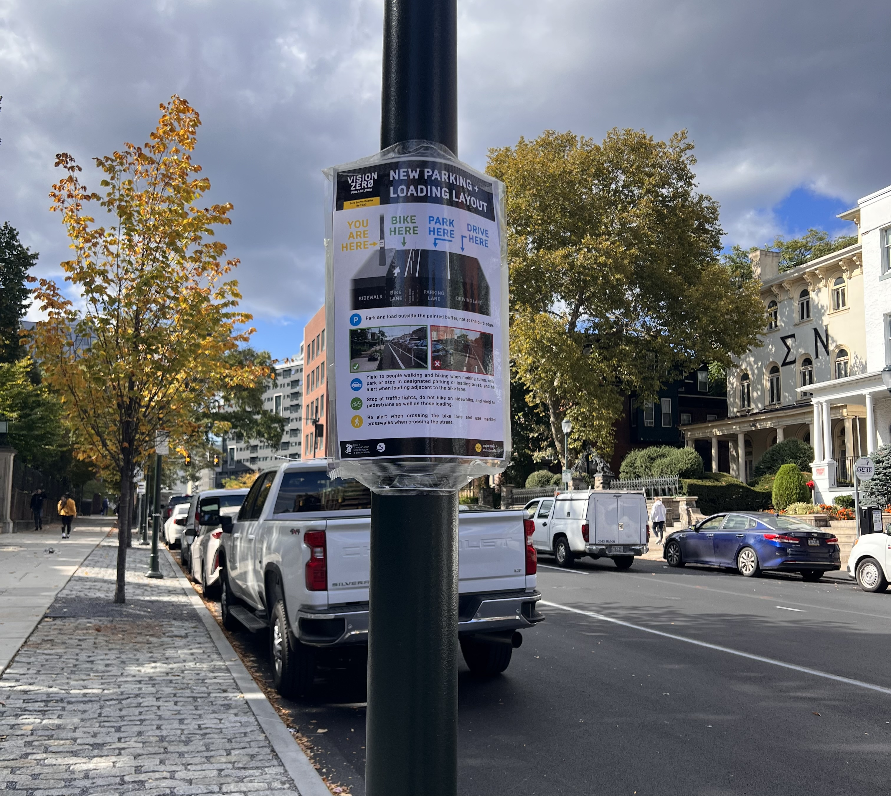

How does a street change?
Walnut Street in Philadelphia recently went through some changes.
In late 2023, Walnut Street was repaved. The new Walnut Street was completely redesigned, with a new layout that included parking-protected bike lanes and shorter pedestrian crossings. If you drive, walk, bike, or roll around Walnut in West Philly, you might have questions about why the street changed. Here's more on the process.
Amy Solano